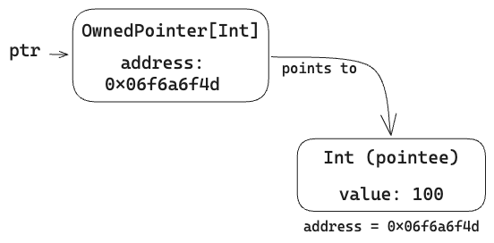
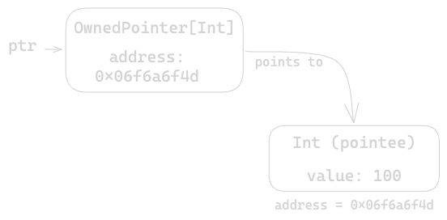

Intro to pointers
Raw and owned pointers, and the mental model behind them.
A pointer is an indirect reference to one or more values stored in memory. The pointer is a value that holds an address to memory, and provides APIs to store and retrieve values to that memory. The value pointed to by a pointer is also known as a pointee.
The Mojo standard library includes several types of pointers, which provide
different sets of features. All of these pointer types are parameterized—they
can point to any type of value, and the value type is specified as a parameter.
For example, the following code creates an OwnedPointer that points to an
Int value:
from std.memory import OwnedPointer
var ptr: OwnedPointer[Int]
ptr = OwnedPointer(100)
The ptr variable has a value of type OwnedPointer[Int]. The pointer points
to a value of type Int, as shown in Figure 1.


Accessing the memory—to retrieve or update a value—is called dereferencing the pointer. You can dereference a pointer by following the variable name with an empty pair of square brackets:
# Update an initialized value
ptr[] += 10
# Access an initialized value
print(ptr[])
Pointer terminology
Before jumping into the pointer types, here are a few terms you'll run across. Some of them may already be familiar to you.
-
Safe pointers: are designed to prevent memory errors. Unless you use one of the APIs that are specially designated as unsafe, you can use these pointers without worrying about memory issues like double-free or use-after-free.
-
Nullable pointers: some languages use a sentinel value to represent a pointer that doesn't point to anything (a "null pointer"). None of the Mojo standard library pointer types are nullable. To model a nullable pointer, use the
Optionaltype. For example,Optional[Pointer]orOptional[OwnedPointer]. -
Owning pointers: own their pointees, which means that the value they point to may be deallocated when the pointer itself is destroyed. Owning pointers (or smart pointers) are responsible for allocating and deallocating memory to hold their pointees. Non-owning pointers may point to values owned elsewhere, or may point to dynamically-allocated memory.
-
Uninitialized memory: refers to memory locations that haven't been initialized with a value, which may therefore contain random data. Newly-allocated memory is uninitialized. The safe pointer APIs don't let you access memory that's uninitialized. The unsafe APIs can access a block of uninitialized memory locations and then initialize them one at a time. Being able to access uninitialized memory is unsafe by definition.
-
Copyability: many pointer types can be copied implicitly (for example, by assigning a value to a variable):
Mojo var copied_ptr = ptrThe pointer itself is a small amount of data to copy (typically 64 bits), and copying the pointer doesn't copy the pointee—both the original pointer and the copy point to the same memory location and the same value.
Pointer types
The Mojo standard library includes several pointer types with different characteristics:
-
Pointeris Mojo's primary pointer type. It points to one or more contiguous memory locations, and can refer to uninitialized memory. -
OwnedPointeris a smart pointer that points to a single value, and maintains exclusive ownership of that value. -
ArcPointeris a reference-counted smart pointer that points to an owned value with ownership potentially shared with other instances ofArcPointer.
Table 1 summarizes the different types of pointers:
Pointer | OwnedPointer | ArcPointer | |
|---|---|---|---|
| Safe | Conditionally 1 | Yes | Yes |
| Memory allocation | Manual via alloc() | Implicit 2 | Implicit 2 |
| Owns pointee(s) | No 3 | Yes | Yes |
| Implicitly copyable | Yes | No | Yes |
| Nullable | No | No | No |
| Can point to uninitialized memory | Yes | No | No |
| Can point to multiple values (array-like access) | Yes | No | No |
1 Pointer has both safe and unsafe methods. Unsafe methods are
named with the unsafe_ prefix (or require an unsafe_ keyword argument).
2 OwnedPointer and ArcPointer implicitly allocate memory when you
initialize the pointer with a value.
3 Pointer provides unsafe methods for initializing and destroying
instances of the stored type. The user is responsible for managing the lifecycle
of stored values.
The following sections provide more details on each pointer type.
Pointer
The Pointer type is Mojo's primary
pointer type. It can access a block of contiguous memory locations, which might
be uninitialized. Heap-allocated memory is accessed through a Pointer; the
other pointer types wrap a Pointer to access heap memory.
The Pointer type is safe when used to point to an existing value:
var ptr = Pointer(to=some_value)
print(ptr[])
When used this way, the Pointer type carries the origin of the value it points
to. It can be used to store a reference in a struct field.
The Pointer type also provides a number of unsafe methods you can use to
access dynamically-allocated memory, initialize and destroy stored values, and
more. These features are useful for low-level systems programming tasks, but you
need to use them with care. Some examples of unsafe pointer uses include:
-
Building high-performance array-like collections, such as
List. A singlePointercan access many values, and gives you a lot of control over how you allocate, use, and deallocate memory. Being able to access uninitialized memory means that you can preallocate a block of memory, and initialize values incrementally as they are added to the collection. -
Interacting with external libraries including C++ and Python. You can use
Pointerto pass a buffer full of data to or from an external library.
For more information, see Using pointers.
OwnedPointer
The OwnedPointer type is a
smart pointer designed for cases where there is single ownership of the
underlying data. An OwnedPointer points to a single item, which is passed in
when you initialize the OwnedPointer. The OwnedPointer allocates memory and
moves or copies the value into the reserved memory.
from std.memory import OwnedPointer
var o_ptr = OwnedPointer(some_big_struct^)
An owned pointer can hold almost any type of item, but when constructing an
OwnedPointer, the stored item must be either Movable or Copyable.
Since an OwnedPointer is designed to enforce single ownership, the pointer
itself can be moved, but not copied.
OwnedPointer does provide an initializer that creates a new OwnedPointer by
copying the stored value from an existing OwnedPointer. This results in two
owned pointers, each with its own separate allocation and its own copy of the
stored value.
ArcPointer
An ArcPointer is a
reference-counted smart pointer, ideal for shared resources where the last owner
for a given value may not be clear. Like an OwnedPointer, it points to a
single value, and it allocates memory when you initialize the ArcPointer with
a value:
from std.memory import ArcPointer
var attributesDict: Dict[String, String] = {}
var attributes = ArcPointer(attributesDict^)
Unlike an OwnedPointer, an ArcPointer can be freely copied. All instances
of a given ArcPointer share a reference count, which is incremented whenever
the ArcPointer is copied and decremented whenever an instance is destroyed.
When the reference count reaches zero, the stored value is destroyed and the
allocated memory is freed.
You can use ArcPointer to implement safe reference-semantic types. For
example, in the following code snippet SharedDict uses an ArcPointer to
store a dictionary. Copying an instance of SharedDict only copies the
ArcPointer, not the dictionary, which is shared between all of the copies.
from std.memory import ArcPointer
struct SharedDict(ImplicitlyCopyable):
var attributes: ArcPointer[Dict[String, String]]
def __init__(out self):
var attributesDict: Dict[String, String] = {}
self.attributes = ArcPointer(attributesDict^)
def __init__(out self, *, copy: Self):
self.attributes = copy.attributes
def __setitem__(mut self, key: String, value: String):
self.attributes[][key] = value
def __getitem__(self, key: String) -> String:
return self.attributes[].get(key, default="")
def main():
var thing1 = SharedDict()
var thing2 = thing1
thing1["Flip"] = "Flop"
print(thing2["Flip"])
This chapter is a faithful rendering of the Mojo documentation page https://mojolang.org/docs/manual/pointers/, saved Thu, 01 Oct 2026 15:38:21 GMT.